ORL générale
Diagnostic et traitement des affections du nez, de la gorge et des oreilles : otites, angines, sinusites, rhinites allergiques.
Le Dr Jacques Majer vous accueille à Vincennes pour la prise en charge médicale et chirurgicale des pathologies de l'oreille, du nez, de la gorge et du cou — chez l'adulte comme chez l'enfant.
Du nourrisson à l'adulte, le cabinet couvre l'ensemble des pathologies oto-rhino-laryngologiques.
Diagnostic et traitement des affections du nez, de la gorge et des oreilles : otites, angines, sinusites, rhinites allergiques.
Suivi spécialisé de l'enfant : otites à répétition, végétations, amygdales, troubles de l'audition et du langage.
Exploration endoscopique et prise en charge des sinusites persistantes, polypose nasale et obstructions nasales.
Troubles de la voix, dysphonie, gêne pharyngée, difficultés de déglutition : bilan complet par fibroscopie.
Bilan auditif complet, surdités, acouphènes, bouchons, otites chroniques et pathologies du tympan.
Exploration vestibulaire des vertiges positionnels, maladie de Menière, névrites — spécialité de thèse du Dr Majer.
Pathologies des glandes parotides et sous-maxillaires : lithiases, infections, tuméfactions cervicales.
Dépistage de l'apnée du sommeil par polygraphie ventilatoire nocturne et traitement du ronflement.
Consultations de médecine esthétique : toxine botulique, acide hyaluronique, harmonisation du visage.
Les interventions sont réalisées à la Clinique Paris Bercy (Charenton-le-Pont) et à la Fondation A. de Rothschild (Paris), ou au cabinet sous anesthésie locale.
Septoplastie, turbinoplastie, chirurgie endoscopique des sinus, polypose nasale.
Thyroïde, kystes du cou, ganglions, tuméfactions cervicales.
Microchirurgie laryngée, nodules, polypes des cordes vocales.
Aérateurs transtympaniques, tympanoplastie, chirurgie de l'oreille moyenne.
Végétations, amygdales, aérateurs — prise en charge adaptée à l'enfant.
Exérèse de lésions cutanées de la face et du cou, reconstruction plastique.
Chirurgie des glandes parotides et sous-maxillaires.
Chirurgie du voile du palais et traitement chirurgical du ronflement.
Rhinoplastie, otoplastie, chirurgie plastique de la face.
Toute intervention chirurgicale fait suite à une consultation préalable au cabinet, au cours de laquelle le Dr Majer pose l'indication et explique le déroulement de l'acte. Selon le type d'intervention, elle sera réalisée conventionnellement, par voie endoscopique ou par micro-chirurgie. Certaines interventions peuvent être pratiquées directement au cabinet de Vincennes sous anesthésie locale ; les interventions plus lourdes sont réalisées à la Clinique Paris Bercy, établissement certifié par la Haute Autorité de Santé.
Un livret opératoire complet vous est remis avant l'intervention — voir la page Avant une chirurgie et Après une chirurgie pour le détail.
Dépistage de l'apnée du sommeil à domicile grâce à un enregistreur portable remis au cabinet. L'examen analyse votre respiration, votre rythme cardiaque et votre oxygénation pendant la nuit, dans le confort de votre lit.
Le Dr Majer est praticien hospitalier à la Fondation A. de Rothschild, où il est spécialisé dans les injections de toxine botulique : dystonies, paralysies faciales, hypersalivation — ainsi qu'en indication esthétique au cabinet.
Pour les renouvellements, les avis simples ou le suivi de traitement, des créneaux de téléconsultation sont disponibles directement sur Doctolib, sans vous déplacer.
Réserver une téléconsultationLe Dr Jacques Majer obtient son Baccalauréat Scientifique avec mention avant d'intégrer la Faculté de Médecine de l'Université Paris XII, à Créteil. Il y décroche son Diplôme d'État de Docteur en Médecine avec la mention Très Honorable et la Médaille d'Argent. Il complète sa formation par un Diplôme d'Études Spécialisées en ORL et Chirurgie Cervico-Faciale, obtenu au cours de son internat.
Sa thèse, consacrée aux « névrites vestibulaires de l'enfant », a été soutenue publiquement à la Faculté de Médecine Paris VII. Ce travail sur les vertiges pédiatriques éclaire encore aujourd'hui sa pratique clinique dans ce domaine technique de l'ORL.
Il effectue ses stages d'internat dans plusieurs hôpitaux parisiens : Hôpital Robert Debré, Hôpital Tenon, CHU Bicêtre, Hôpital Bégin et Hôpital Lariboisière. Il poursuit ensuite comme assistant à l'Hôpital Lariboisière, puis au Groupe Hospitalier Paris Saint-Joseph.
Le Dr Majer exerce au Cabinet Médical Majer à Vincennes, où il reçoit adultes et enfants pour l'ensemble des pathologies ORL. Il est également Praticien Hospitalier à la Fondation A. de Rothschild, référent pour les injections de toxine botulique (dystonie, bavage, paralysie faciale), et opère à la Clinique Paris Bercy.
Consulter le Dr MajerUn aperçu du Cabinet Médical Majer, au 21 avenue de Paris à Vincennes.
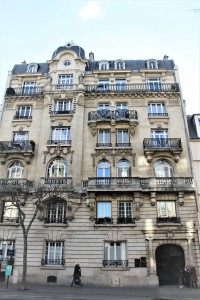
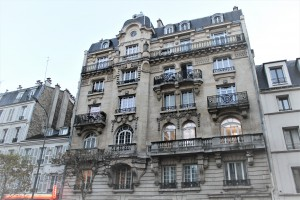
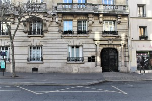
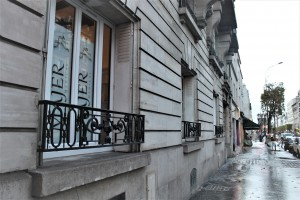
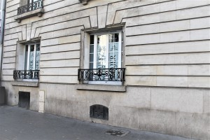
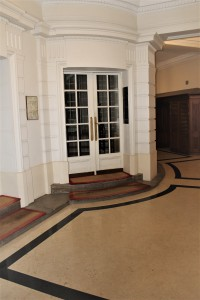
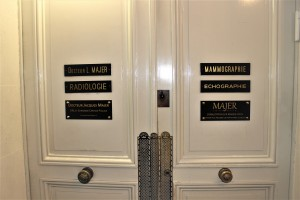
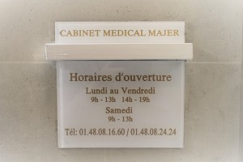
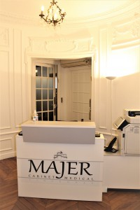
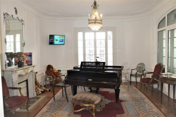
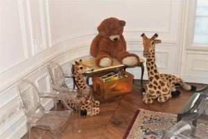
Le Cabinet Médical Majer réunit, en un même lieu, une salle de consultation ORL entièrement équipée, un plateau technique dédié à l'audiologie et à l'imagerie, ainsi qu'une salle de petite chirurgie. L'ensemble de l'équipement permet de réaliser sur place la grande majorité des examens et actes ORL.
Médecin conventionné secteur 2, adhérent à l'OPTAM. L'Assurance Maladie rembourse 70 % du tarif de base dans le cadre du parcours de soins coordonné ; le complément relève de votre mutuelle.
Les actes de médecine esthétique (toxine botulique, acide hyaluronique) ne sont pas pris en charge par l'Assurance Maladie. Certaines situations (ALD, C2S) ouvrent droit à une prise en charge à 100 % avec tiers payant. Un devis est remis avant tout acte chirurgical ou esthétique.
Lundi – Vendredi : 9h00 – 13h00 · 14h00 – 19h00
Samedi : 9h00 – 13h00
Réservez votre créneau en quelques clics, au cabinet ou en téléconsultation.
Rendez-vous sur Doctolib21 avenue de Paris
94300 Vincennes
01 48 08 16 60 / 01 48 08 24 24
Itinéraire →